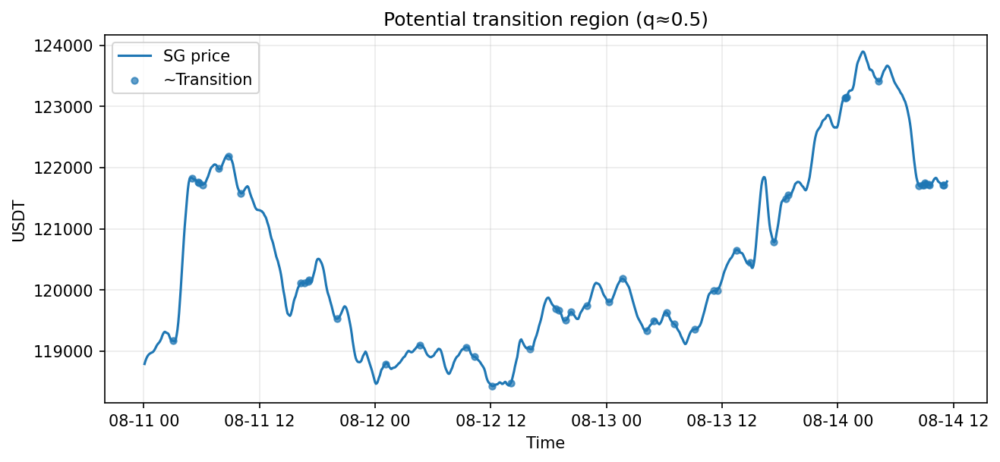

On the Knife Edge: Committor Functions for Market Transitions
Adapting committor analysis from molecular dynamics to identify unstable transition points in BTC price regimes.
Committor Probability Profile

Identified Transition Regions
Notebook & code: GitHub